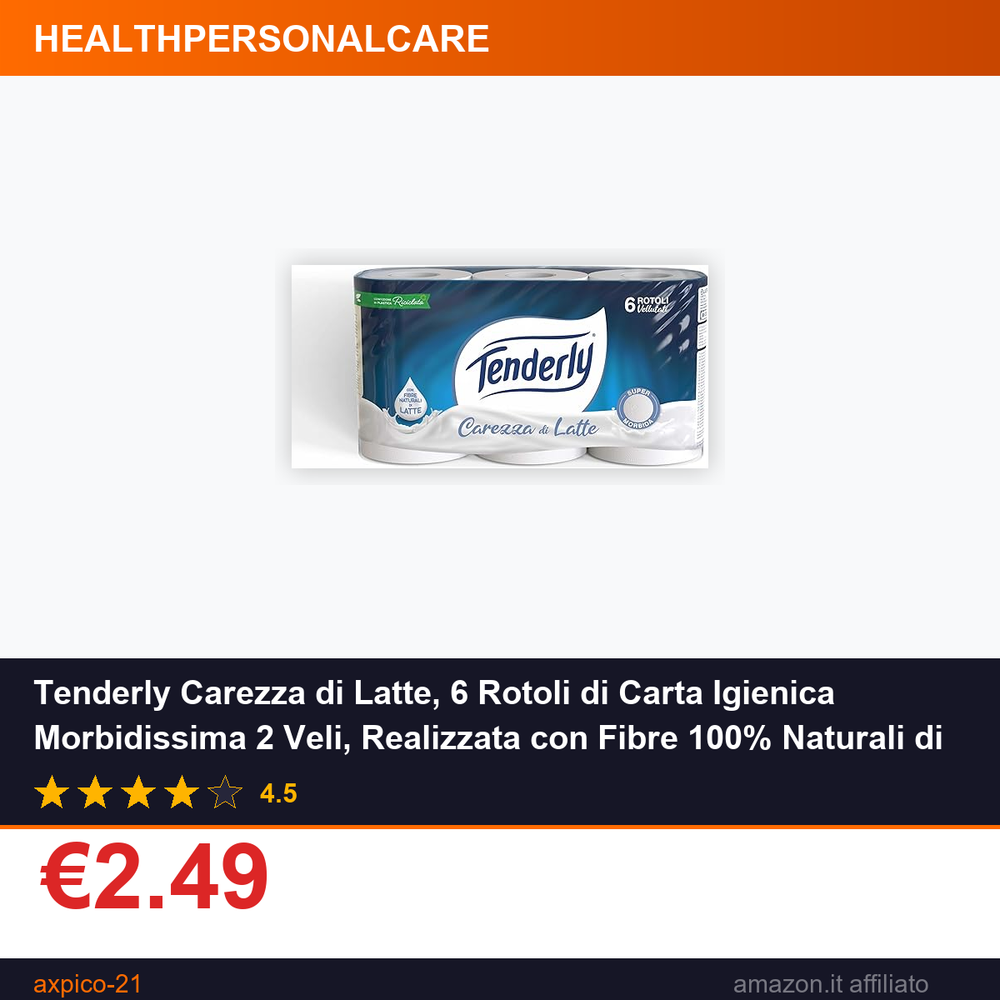

Tenderly Carezza di Latte, 6 Rotoli di Carta Igienica Morbidissima 2 Veli, Realizzata con Fibre 100% Naturali di Latte, Made in Italy
⚠️ Il prezzo potrebbe variare. Verifica il prezzo aggiornato su Amazon prima di acquistare. In qualità di Affiliato Amazon ricevo un guadagno dagli acquisti idonei.
Quando si tratta di prodotti per l'igiene personale di uso quotidiano, la carta igienica è spesso una scelta che passa in secondo piano, ma la qualità di questo articolo fa davvero la differenza per il comfort di ogni giorno. La Tenderly Carezza di Latte, inquadrata nella categoria HealthPersonalCare di Amazon, è una proposta che sta riscuotendo grande successo tra gli utenti, grazie alla sua morbidezza unica e alla composizione attenta alla pelle e all'origine delle materie prime.
Caratteristiche principali
- Confezione da 6 rotoli di carta igienica a 2 veli, pensata per l'uso quotidiano domestico
- Realizzata con fibre 100% naturali di latte, per una texture morbidissima e delicata al tatto
- Prodotto interamente Made in Italy, che garantisce standard qualitativi elevati e trasparenza della filiera produttiva
- Valutazione media di 4.5/5 stelle su Amazon, confermata dalla soddisfazione degli acquirenti che ne hanno testato la qualità
Prezzo e offerta
Al momento il prodotto è disponibile su Amazon a un prezzo promozionale di soli €2.49 per l'intera confezione da 6 rotoli. Si tratta di un costo estremamente accessibile per un prodotto con queste caratteristiche: la presenza di fibre naturali di latte e la produzione 100% Made in Italy rendono questo prezzo un'ottima opportunità per chi cerca un prodotto affidabile per la propria casa a un costo contenuto. Approfittare di questa offerta permette di fare scorta di un bene di consumo essenziale senza dover sacrificare la qualità.
Se stai cercando una carta igienica delicata, morbida e realizzata con ingredienti naturali, questa promozione è l'occasione giusta per testare la Tenderly Carezza di Latte. Non perdere l'opportunità di portare a casa un prodotto Made in Italy di alta qualità a un prezzo imbattibile.